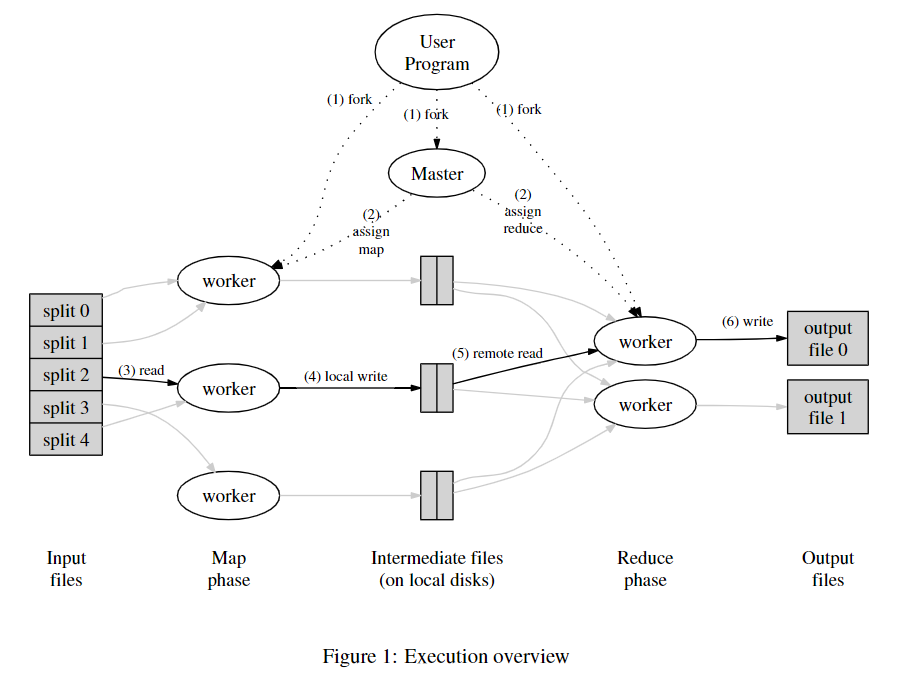

6.824 的第一篇论文是 Google “三驾马车”之一的 MapReduce——一种基于分治策略，用于处理和生成大型数据集的模型，且许多现实世界的任务都可以在此模型中表达。
背景
Google 开发者已实现了许多处理大量原始数据的专用算法，但其必须在海量机器上运行才能在合理的时间内完成。为了解决如何并行化计算、分发数据和处理故障等问题，目前的做法仅仅是堆砌代码，反而令本该很简单的计算变得复杂。
Google 从 Lisp 和许多其他函数式语言中的 map 和 reduce 原语中汲取灵感，设计了一个新的抽象——MapReduce 库。它是一个简单而强大的接口，可以实现大规模计算的自动并行化和分布，并结合该接口的实现，在大型商用 PC 集群上实现高性能。
编程模型
计算采用一组输入 K/V 对，并产生一组输出 K/V 对。MapReduce 库将计算表示为由用户编写的两个函数：
map：根据输入生成一组中间 K/V 对。 MapReduce 库将所有具有相同 Key \(k_i\) 的 K/V 对传递给 Reduce 函数。reduce。将 \(k_i\) 对应的所有值合并成 Value Set，并能通过迭代器访问。
以计算大量文档中每个单词出现次数为例，其伪代码如下所示：
2
3
4
5
6
7
8
9
10
11
12
13
// key: document name
// value: document contents
for each word w in value:
EmitIntermediate(w, "1");
reduce(String key, Iterator values):
// key: a word
// value: a list of counts
int result = 0;
for each v in values:
result += ParseInt(v);
Emit(AsString(result));
map函数发出每个单词及其出现次数。reduce函数统计特定单词发出的所有次数。MapReduce 还可以解决例如分布式字符串查找、URL 访问频率计数、翻转网页连接图、主机关键向量指标、倒排索引、分布式排序等问题。
实现
关于 lab1 MapReduce 的具体实现可参考这篇文章。
操作流程
MapReduce 操作总体流程如下：

- MapReduce 库首先将输入文件 split 成 M 块，然后，它会在集群上启动该程序的多个副本；
- 其中一个副本是 Master（在 lab1 中称为 Coordinator），其余的是由 Master 分配工作的 Worker。有 M 个 map 任务和 R 个 reduce 任务要分配。 Master 为每个空闲的 Worker 分配一个任务。
- map Worker 从输入数据中解析出 K/V 对，并将每一对传递给
map函数，生成的中间 K/V 对并缓存在内存中； - 缓冲的 K/V 对定期被写入本地磁盘，由分区函数划分为 R 个区域。Master 获取这些缓冲对的位置并负责将这些位置转发给 reduce Worker；
- 当 Master 通知 reduce Worker 这些位置时，它使用 RPC 从 map Worker 的本地磁盘读取缓冲数据。当 reduce Worker 读取所有中间数据时，它会根据中间键对其进行排序，以便将所有出现的相同键组合在一起；
- reduce Worker 迭代排序的中间数据，对于遇到的每个唯一中间键，它将键和相应的中间值集传递给用户的
reduce函数。reduce函数将输出 append 到对应分区的最终文件中； - 当所有的 map 任务和 reduce 任务都完成后，Master 唤醒用户程序，从 MapReduce 调用中返回。
Master 数据结构
Master 存储所有任务的状态（ idle 、 in-progress 或 completed ）和分配给所有工作机器执行的任务，以及由 map 任务生成的 R 个中间文件区域的位置和大小。当 map 任务完成时，对此位置和大小信息的更新被递增地推送给 reduce Worker。
容错
Worker 故障
Master 周期性地 ping 每个 Worker，如果 Worker 超时未回应，则将其标记为 Failed。
Worker 故障容错遵循以下原则：
- map 任务被 Worker 完成后将重置为
idle状态，以便调度给其他 Worker； - Failed Worker 未完成的任何任务将重置为
idle状态； - Failed Worker 已完成的 map 任务将重新执行，因为它们的输出存储在故障机器的本地磁盘上，无法访问；
- Failed Worker 已完成的 reduce 任务无需重新执行，因为它们的输出存储在全局文件系统中；
- 当一个 map 任务因 WorkerA 失败转而由 WorkerB 执行，所有 reduce Worker 会收到重新执行的通知，任何尚未从 Worker A 读取数据的 reduce 任务将从 Worker B 读取数据。
当大规模 Worker 故障发生时，Master 只是简单地重新执行 Failed Worker 所做的工作，并继续向前推进，最终完成 MapReduce 操作。
Master 故障
Master 定期设置检查点。如果 Master 任务死亡，则可以从最后一个检查点状态开始一个新的副本。如果 Master 出现故障，当前的实现将中止 MapReduce。client 可以在需要时重试 MapReduce 操作。
出现故障时的语义
当用户提供的 map 和 reduce 是其输入值的确定性函数时，分布式实现产生的输出与整个程序的无故障顺序执行产生的输出相同。开发者依靠 map 和 reduce 任务输出文件的原子提交来实现此属性——每个正在进行的任务将其输出写入私有临时输出文件。一个 reduce 任务生成一个临时文件，一个 map 任务生成 R 个临时文件（每个 reduce 任务一个）。
- 当 map 任务完成时，Worker 通知 Master，并在消息中包含 R 个临时文件的名称。当 Master 收到一个 map 任务首次完成消息时，它将那 R 个文件名保存在 Master 数据结构中；
- 当 reduce 任务完成时，reduce Worker 将其临时文件重命名为 Final 文件；
当 map 和/或 reduce 是非确定性函数时，MapReduce 提供较弱但仍然合理的语义。
局部性
通过将输入数据存储在集群中机器的本地磁盘上，并根据就近原则安排 map 任务，从而尽可能节省网络带宽——大多数 map Worker 仅需从本地读取输入数据。
任务粒度
理想情况下，M 和 R 应该远大于 Worker 机器的数量。让每个 Worker 执行多个不同的任务可以改善动态负载平衡，并在 Worker 失败时加快恢复速度——已/未完成的 map 任务可以被其它许多 Worker 重新执行。
但实际实现中，M 和 R 的大小有限制，因为主节点必须做出 \(O(M+R)\) 次调度决策并在内存中保持 \(O(M*R)\) 种状态。此外，R 经常受到用户的限制，因为每个 reduce 任务的输出最终都在一个单独的输出文件中。
备份任务
MapReduce 操作所用总时间受短板效应影响。
“短板”的解决方法为：当 MapReduce 操作接近完成时，Master 会调度 Backup Worker 并将仍 in-progress 的任务分配给它执行，只要执行同一个任务的任何一个 Worker 完成，任务就会被标记为 completed。
优化方案
这里只罗列一部分。
定制分区函数
MapReduce 库的用户可以自定义分区函数来应对不同应用场景。例如，使用 \(hash(Hostname(urlkey))\ \%\ R\) 作为分区函数可以使来自同一主机的所有 URL 最终出现在同一个输出文件中。
排序保证
MapReduce 保证在给定的分区内，中间 K/V 对以 Key 递增顺序进行排列。从而保证每个分区的输出文件也是有序的——这在输出文件需要支持按键随机访问查找时很有用。
Combiner 函数
在某些情况下，每个 map 任务的输出存在重复中间键。
一个很好的例子是前文的字数统计问题。由于词频倾向于服从 Zipf 分布，因此每个 map 任务将产生大量类似于
<the, "1">的记录。
MapReduce 允许用户指定一个可选的 combiner 函数，在 map Worker 处先对数据进行一轮合并再发给 reduce 任务，这能够显著加快某些类的 MapReduce 操作。
副作用
在某些情况下，MapReduce 的用户发现生成辅助文件作为他们的 map 和/或 reduce 运算符的额外输出很方便。我们依靠应用程序编写者来使此类副作用原子化和幂等。通常，应用程序会写入一个临时文件，并在该文件完全生成后自动重命名该文件。我们不支持单个任务生成的多个输出文件的原子两阶段提交。因此，产生具有跨文件一致性要求的多个输出文件的任务应该是确定性的。
本地执行
开发者实现了 MapReduce 库的替代品，能在本地机器上顺序执行 MapReduce 操作的所有工作，以便调试、分析和小规模测试。
状态信息
Master 运行一个内部 HTTP server 并导出一组状态页面供用户使用。状态页面显示计算的进度，还包含定向到每个任务生成的标准报错和标准输出文件的链接。
计数器
MapReduce 库提供了一个计数器工具来计算各种事件的发生次数，从而高效地对数据完整性进行检查。例如，用户代码可能想要计算已处理的单词总数或索引的德语文档数量等，伪代码如下：
1 | Counter* uppercase; |
总结
MapReduce 模型通过简单的接口实现了自动的并行化和大规模的分布式计算，提供了高性能的同时大大降低了编程复杂度，拉开了分布式计算的序幕并影响了其后所有的计算框架，包括现在流行的批处理框架 Spark 和流处理框架 Flink 都很受其影响。这对于那个年代的分布式领域而言无疑是神来之笔。